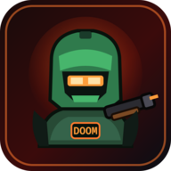

HEALTH100
ARMOR000
AMMO48
WEAPONPISTOL
KILLS0/0
SECTOR1/3

NUXEL ARCADE // ORIGINAL
NUXEL DOOM
The penguin has a shotgun. The demons do not have a good day.
Original Nuxel game. No DOOM WAD assets are bundled. The optional Classic Engine button launches an installed Crispy Doom when available.
NUXEL DOOM
TOUCH & AUDIO
LOOK SENSITIVITY
Movement uses the left joystick. Aim by dragging the right side. Fire, use, weapon, run and pause are simultaneous multitouch buttons. Settings persist on this device.
SYSTEM PAUSE
PAUSED
The demons are polite enough to wait. Mostly.
MISSION REPORT